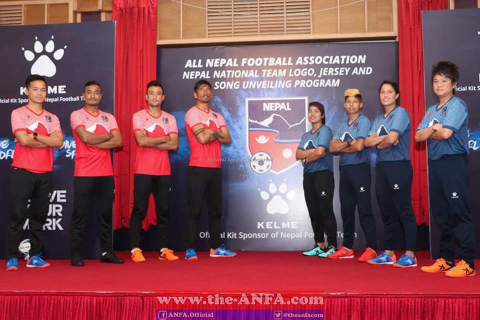
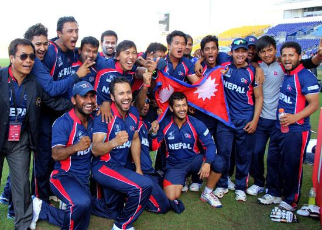
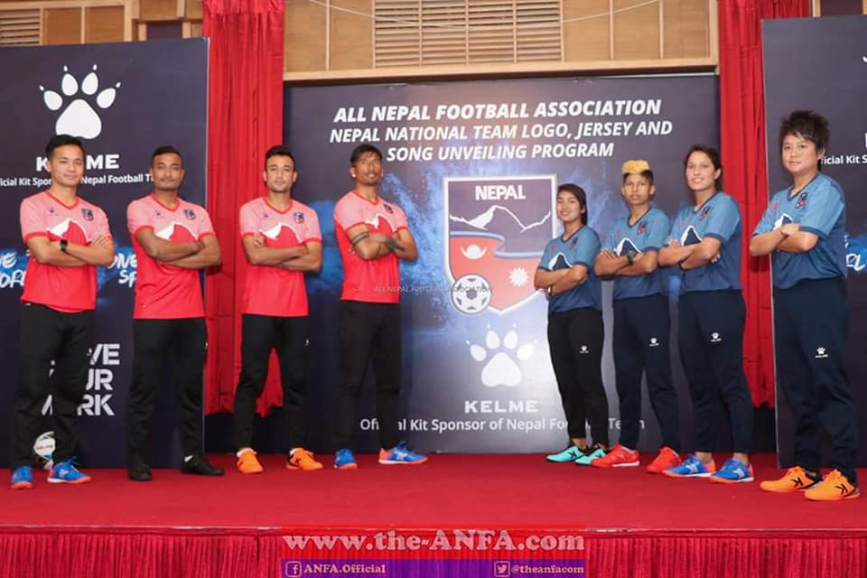
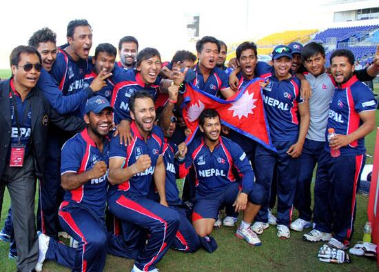

The national team's kit employs a tricolor of red, blue, and white to reflect the colors of the national flag of Nepal. With red being used for home matches, and blue for away. The pattern in some kits reflects the triangular shaping of the flag, namely the 2013 kit. Nepal's kits are mostly template kits, as opposed to a custom team-specific kit. This is because the Nepal national team isn't lucrative enough to afford kit partnership deals with manufacturers. Very little is known about the history prior to 1998.
 


